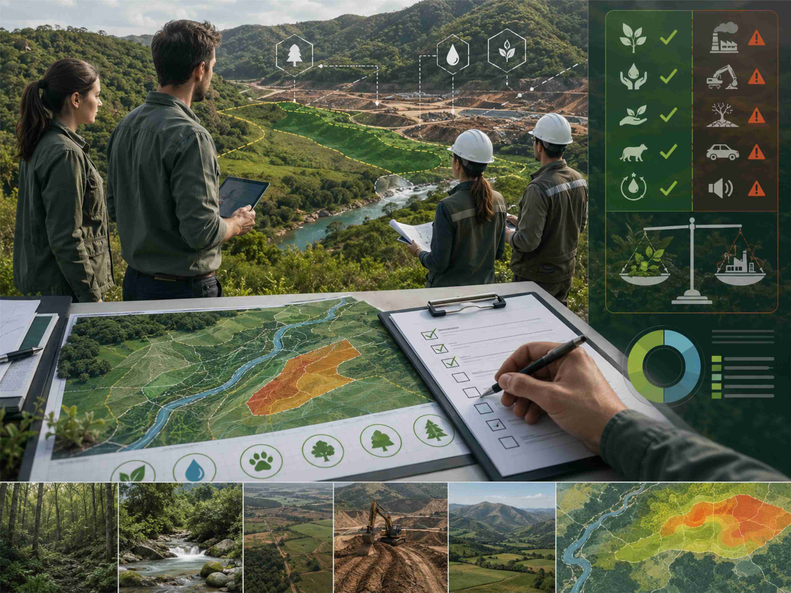
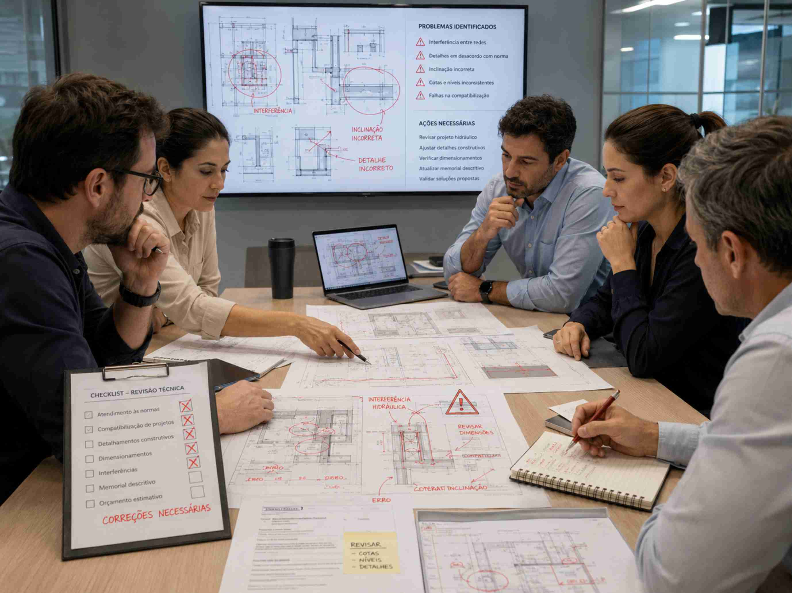
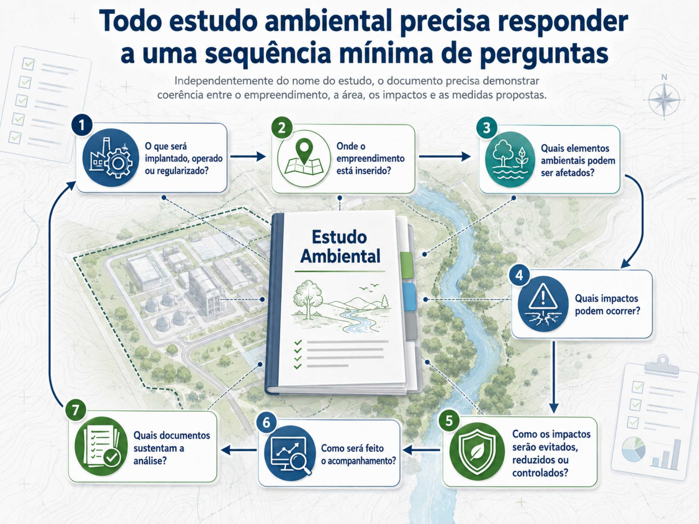

DTA
Descritivo Técnico Ambiental
Para situações de menor complexidade, com caracterização objetiva do empreendimento, atividade e aspectos ambientais envolvidos.
Entender aplicaçãoElaboramos estudos ambientais compatíveis com o porte, a atividade, a localização e o órgão ambiental competente, com foco em processos junto à SEMAM Teresina, à SEMARH/PI e a demais órgãos ambientais municipais e estaduais no Brasil.
Em muitos processos ambientais, o empreendedor recebe uma manifestação, check-list ou termo de referência emitido pelo órgão ambiental, indicando o tipo de estudo que deve ser apresentado.
Mesmo assim, permanece uma etapa crítica: transformar essa exigência em um estudo tecnicamente consistente e respostas objetivas às questões levantadas pelo órgão avaliador.
A indicação do estudo é apenas o ponto de partida. A qualidade do documento depende da correta leitura da manifestação e da compatibilização entre legislação, termo de referência, realidade de campo e fase do processo.
Por isso, analisamos previamente a exigência recebida pelo cliente e estruturamos o estudo ambiental de forma coerente, reduzindo o risco de pendências, retrabalho e atrasos na tramitação.
A expressão “estudo ambiental” reúne diferentes documentos técnicos. Para facilitar a navegação, organizamos os principais estudos em grupos.
Descritivo Técnico Ambiental
Para situações de menor complexidade, com caracterização objetiva do empreendimento, atividade e aspectos ambientais envolvidos.
Entender aplicaçãoEstudo Ambiental Simplificado
Incluindo diagnóstico, identificação de impactos, medidas mitigadoras e recomendações técnicas compatíveis com o porte e a atividade.
Entender aplicaçãoEstudo Ambiental Intermediário
Aplicável em determinados processos estaduais, com nível de detalhamento superior ao EAS e inferior ao EIA/RIMA.
Entender aplicaçãoPlano de Controle Ambiental
Voltado à definição de medidas, programas, procedimentos e ações de controle ambiental.
Entender aplicaçãoEstudo de Impacto Ambiental / Relatório de Impacto Ambiental
Estudo de maior complexidade para empreendimentos com significativo potencial de impacto ambiental, incluindo diagnóstico amplo, impactos, alternativas e monitoramento.
Entender aplicaçãoRelatório de Desempenho Ambiental
Aplicável a situações de regularização, especialmente quando o empreendimento já está implantado ou em operação.
Entender aplicaçãoAlém do estudo ambiental principal, o órgão ambiental pode solicitar planos, mapas, pareceres, estudos hidrológicos e peças específicas conforme a característica do empreendimento.
Plano de Gerenciamento de Resíduos da Construção Civil para obras, empreendimentos imobiliários e processos de licenciamento.
Conhecer serviçoPlano de Recuperação de Área Degradada para recomposição ambiental, revegetação, estabilização e recuperação funcional da área.
Conhecer serviçoAvaliação de bacias, drenagem, vazões, interferências hídricas, corpos d’água e riscos associados à implantação de empreendimentos.
Conhecer serviçoEstudos para lançamento de efluentes, corpos receptores, capacidade de suporte ambiental e qualidade da água.
Conhecer serviçoSuporte técnico para captação, lançamento, interferências em recursos hídricos e regularização de usos da água.
Conhecer serviçoCaracterização ambiental, inventário, análise territorial, APP, uso do solo, mapas temáticos e peças técnicas complementares.
Solicitar avaliaçãoUm mesmo tipo de empreendimento pode ter exigências diferentes conforme o município, o estado, a competência do licenciamento, o porte da atividade e as características ambientais da área.
Atuação em processos de impacto local, obras urbanas, atividades econômicas, regularização ambiental, autorização, dispensa, viabilidade, licenças e estudos exigidos pelo município.
Atuação em processos estaduais, atividades de maior porte, impactos não locais, consulta prévia, enquadramento, estudos ambientais e documentos complementares.
Atuação mediante leitura da legislação local, dos termos de referência aplicáveis e das exigências específicas do órgão ambiental competente.
Um estudo ambiental consistente precisa responder a uma sequência lógica. Não basta reunir textos, mapas e anexos. É necessário construir uma narrativa técnica que explique o empreendimento, caracterize a área, identifique os impactos, proponha medidas de controle e permita que o órgão ambiental compreenda o risco, a viabilidade e as condicionantes necessárias.

Clique em cada tópico para entender como a GCRH Engenharia conduz diferentes tipos de estudos e documentos ambientais.
Antes de elaborar qualquer estudo ambiental, é necessário compreender qual é o problema técnico do processo. O empreendimento está em fase de planejamento, instalação, operação ou regularização? Existe licença anterior? Há pendência emitida pelo órgão ambiental? A área possui APP, curso d’água, vegetação, restrições urbanísticas ou outra condição sensível?
Essa etapa evita que o empreendedor contrate um estudo inadequado, protocole a documentação errada ou receba exigências sucessivas por falhas de enquadramento.
A GCRH Engenharia realiza essa leitura preliminar para definir o caminho técnico mais seguro: qual órgão deve analisar o processo, qual licença pode ser necessária, qual estudo ambiental é mais compatível e quais documentos complementares devem ser organizados.

Estudos ambientais simplificados não devem ser confundidos com documentos superficiais. Mesmo quando o processo exige um estudo de menor complexidade, o documento precisa apresentar caracterização adequada do empreendimento, localização, contexto ambiental, impactos previsíveis, medidas mitigadoras e recomendações compatíveis com a atividade.
O DTA e o EAS devem ser proporcionais ao porte e ao potencial de impacto do empreendimento. A diferença está no nível de detalhamento, na profundidade do diagnóstico e na complexidade da análise exigida.
A GCRH estrutura esses estudos com linguagem técnica clara, mapas, fotografias, descrição objetiva da atividade, análise normativa, identificação de impactos e medidas de controle aplicáveis.
O Plano de Controle Ambiental e o Estudo Ambiental Intermediário são indicados quando o processo exige maior detalhamento das medidas de controle, prevenção, mitigação e monitoramento. Seu foco é transformar os impactos identificados em ações práticas, responsabilidades, procedimentos, indicadores e formas de acompanhamento.
Um bom PCA ou EAI não deve ser apenas uma lista de intenções. Ele precisa indicar o que será feito, onde, quando, por quem, com qual objetivo e com qual forma de verificação.
A GCRH elabora planos de controle ambiental e estudos ambietnais intermediários integrando diagnóstico, medidas operacionais, gestão de resíduos, controle de efluentes, drenagem, ruído, emissões, supressão vegetal, comunicação, monitoramento e demais aspectos aplicáveis ao empreendimento.
O EIA/RIMA é exigido para empreendimentos com maior potencial de impacto ambiental. Nesse caso, o estudo precisa avaliar alternativas, delimitar áreas de influência, caracterizar os meios físico, biótico e socioeconômico, identificar impactos positivos e negativos, propor medidas mitigadoras, programas de controle e ações de monitoramento.
O RIMA deve traduzir os resultados do estudo em linguagem acessível, com mapas, quadros, gráficos e elementos visuais que permitam à sociedade compreender as vantagens, desvantagens e consequências ambientais do empreendimento.
A GCRH atua na estruturação técnica desses estudos com abordagem multidisciplinar, integração entre engenharia, meio ambiente, hidrologia, geoprocessamento, análise territorial e comunicação técnica.
Muitos processos ambientais não dependem apenas do estudo ambiental principal. Quando há captação de água, lançamento de efluentes, interferência em drenagem, travessias, corpos hídricos, áreas inundáveis ou ausência de infraestrutura pública, podem ser necessários estudos complementares de base hídrica.
Nesses casos, avaliamos bacias de contribuição, vazões de referência, disponibilidade hídrica, capacidade de suporte do corpo receptor, autodepuração, drenagem, manchas de inundação e possíveis impactos sobre os recursos hídricos.
Essa é uma das principais especialidades da GCRH Engenharia. Integramos modelagem, geoprocessamento, análise hidrológica e interpretação ambiental para produzir estudos mais robustos e compatíveis com o licenciamento.

Além do estudo ambiental principal, o órgão ambiental pode solicitar planos e peças específicas conforme as características do empreendimento.
Em obras da construção civil, pode ser necessário PGRCC. Em áreas degradadas, pode ser exigido PRAD. Quando há vegetação, podem ser necessários caracterização de flora, inventário florestal, autorização de supressão vegetal, reposição florestal e medidas de recuperação.
A GCRH organiza esses documentos de forma integrada para evitar contradições entre o estudo ambiental principal, os projetos de engenharia, os mapas, os cronogramas e as medidas propostas.

Nem sempre o cliente chega no início do processo. Muitas vezes, a demanda surge após uma notificação, pendência técnica, indeferimento, licença vencida, obra iniciada sem licença ou exigência complementar do órgão ambiental.
Nesses casos, o trabalho exige leitura crítica do processo, identificação da falha, revisão dos documentos apresentados e elaboração de resposta técnica objetiva.
A GCRH atua na correção de estudos, complementação de informações, elaboração de pareceres, produção de mapas, revisão de memoriais, resposta a notificações e apoio técnico para regularização ambiental.

Envie as informações iniciais da sua demanda para análise preliminar.
Solicitar orçamentoIndependentemente do nome do estudo, um documento ambiental precisa demonstrar coerência entre o empreendimento, a área, os impactos e as medidas propostas. A complexidade pode variar, mas a lógica técnica permanece.



A GCRH Engenharia possui atuação técnica com foco em Teresina e no estado do Piauí, especialmente em processos que envolvem SEMAM, SEMARH/PI, recursos hídricos, saneamento, empreendimentos urbanos, obras de infraestrutura, atividades econômicas e regularizações ambientais.
Também atuamos em outros estados a partir da leitura da legislação local, dos termos de referência do órgão competente e das características do empreendimento. A metodologia é replicável: enquadrar corretamente, compreender o órgão avaliador, levantar dados, produzir diagnóstico, avaliar impactos, propor medidas e entregar documentação tecnicamente defensável.
Nosso diferencial está na integração entre engenharia, meio ambiente, recursos hídricos, geoprocessamento, modelagem computacional e experiência com documentação técnico-administrativa.

A GCRH Engenharia combina experiência acadêmica, prática profissional e domínio de ferramentas técnicas para produzir estudos ambientais consistentes.
Avaliamos modalidade de licenciamento, órgão competente, classe provável e documentos complementares antes de produzir o estudo.
Estudos ambientais frequentemente exigem compreensão de drenagem, efluentes, saneamento, hidrologia, infraestrutura e operação.
Produzimos mapas e análises territoriais para demonstrar restrições, áreas de influência, hidrografia, APP, zoneamento e localização.
Quando necessário, vamos a campo para reconhecer a área, registrar evidências e validar informações usadas no estudo.
Organizamos o estudo com memória técnica, referências, anexos, justificativas metodológicas e responsabilidade profissional.
Apoiamos o cliente em respostas a notificações, complementações, reuniões técnicas e esclarecimentos junto ao órgão ambiental.
Dependendo do empreendimento, o estudo ambiental pode precisar ser acompanhado de outros documentos técnicos.
Envie as informações iniciais do seu empreendimento. A GCRH Engenharia fará uma leitura preliminar da demanda e indicará o caminho técnico mais adequado para o seu caso.
Com base na localização, atividade, porte, fase do processo e situação documental, podemos orientar o escopo, estimar os estudos necessários e apresentar uma proposta compatível com a complexidade real da demanda.